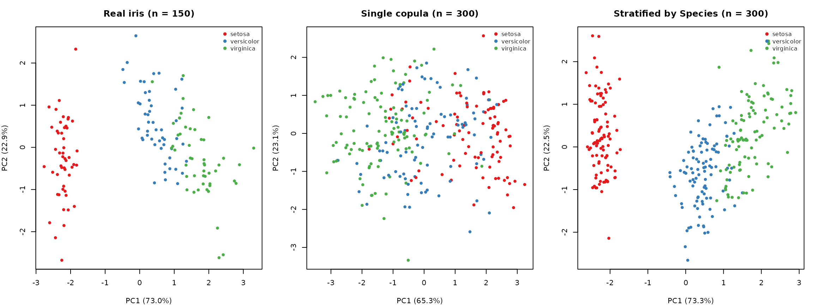
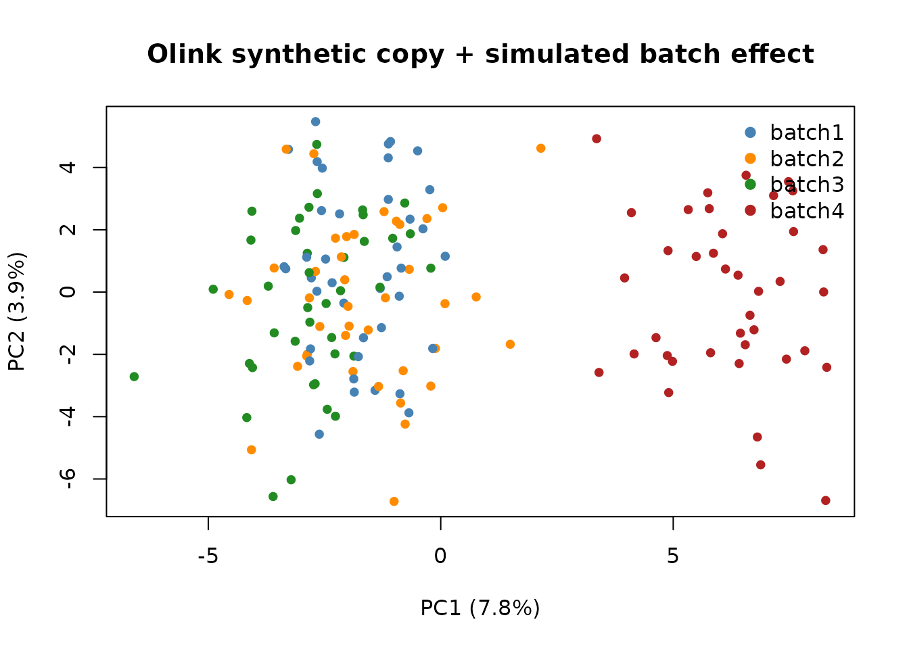

synthetica: a walkthrough
intro.RmdWhat the synthetica R package is for
synthetica generates synthetic copies of tabular
datasets that preserve the marginal distribution of every
column and the joint correlation structure across columns – without
retaining any row-level information from the input. It supports
mixed-type data (numeric, binary, categorical) and is designed to feel
like a small, self-contained utility you reach for when you need:
- A shareable version of cohort data, scrubbed of any individual rows
- Teaching/test datasets that mimic the statistical properties of real data without exposing it
- Power analyses with a known ground-truth effect baked in
- Stress tests for batch-correction or normalisation pipelines
The package exports four functions:
- [
simulate_dataset()][simulate_dataset] – the main copula simulator, with optional phenotype injection and per-level fitting (stratify_by) - [
add_batch_effect()][add_batch_effect] – a post-processor that introduces a synthetic technical batch structure - [
add_group_effect()][add_group_effect] – a post-processor that adds a designed nominal grouping factor - [
simulate_longitudinal()][simulate_longitudinal] – a wrapper for repeated-measures / panel data
This article is the getting-started tour: baseline simulation, recovery checks, stratification, integer/discrete fidelity, and a real proteomics example. The other articles cover the rest:
- Injecting phenotypes – continuous, binary, and categorical traits correlated with chosen features
- Batch & group effects – technical batches and designed biological groups
-
Longitudinal data – repeated measures via
simulate_longitudinal()
Simple Simulation:
Simulate a synthetic copy of the iris dataset
Generate a synthetic copy of 300 rows, doubling the size of the
input. - note that we can ask for any n
sim <- simulate_dataset(iris,
n = nrow(iris) * 2,
seed = 42,
verbose = FALSE)
sim is a list of class synthetica_sim.
The synthetic data.frame lives in sim$data:
with 300 rows and 5 columns, it has the same shape as the input but no
row-level information is retained.
class(sim)
#> [1] "synthetica_sim"There are various attributes in the sim object:
names(sim)
#> [1] "data" "marginals" "corr"
#> [4] "missingness" "inject_truth" "dropped_cols"
#> [7] "dropped_near_constant" "dropped_high_missing" "audit"
#> [10] "call"The data attribute is the synthetic dataset
itself:
dim(sim$data)
#> [1] 300 5How well does the simulated match the input?
Side-by-side marginal recovery:
input_num <- iris[, vapply(iris, is.numeric, logical(1))]
sim_num <- sim$data[, vapply(sim$data, is.numeric, logical(1))]
summary_compare <- data.frame(
variable = names(input_num),
in_median = vapply(input_num, median, numeric(1), na.rm = TRUE),
sim_median= vapply(sim_num, median, numeric(1), na.rm = TRUE),
in_sd = vapply(input_num, sd, numeric(1), na.rm = TRUE),
sim_sd = vapply(sim_num, sd, numeric(1), na.rm = TRUE),
in_miss = vapply(input_num, function(x) mean(is.na(x)), numeric(1)),
sim_miss = vapply(sim_num, function(x) mean(is.na(x)), numeric(1))
)
summary_compare |>
kable(digits = 3,
caption = "Marginal recovery: input vs simulated (numeric columns)") |>
kable_styling(full_width = FALSE, font_size = 11)| variable | in_median | sim_median | in_sd | sim_sd | in_miss | sim_miss | |
|---|---|---|---|---|---|---|---|
| Sepal.Length | Sepal.Length | 5.80 | 5.800 | 0.828 | 0.819 | 0 | 0 |
| Sepal.Width | Sepal.Width | 3.00 | 3.000 | 0.436 | 0.420 | 0 | 0 |
| Petal.Length | Petal.Length | 4.35 | 4.500 | 1.765 | 1.780 | 0 | 0 |
| Petal.Width | Petal.Width | 1.30 | 1.363 | 0.762 | 0.759 | 0 | 0 |
Categorical recovery (Species)
# Categorical recovery (Species)
data.frame(
level = levels(iris$Species),
input_prop = as.numeric(prop.table(table(iris$Species))),
sim_prop = as.numeric(prop.table(table(sim$data$Species)))
) |>
kable(digits = 3, caption = "Species level frequencies") |>
kable_styling(full_width = FALSE, font_size = 11)| level | input_prop | sim_prop |
|---|---|---|
| setosa | 0.333 | 0.317 |
| versicolor | 0.333 | 0.307 |
| virginica | 0.333 | 0.377 |
Joint correlation recovery
The Gaussian copula preserves rank (Spearman) correlations by construction:
in_cor <- cor(input_num, use = "pairwise.complete.obs", method = "spearman")
sim_cor <- cor(sim_num, use = "pairwise.complete.obs", method = "spearman")
# Frobenius distance, normalised
fro <- norm(in_cor - sim_cor, type = "F") / norm(in_cor, type = "F")
cat(sprintf("Spearman correlation Frobenius distance (relative): %.4f\n", fro))
#> Spearman correlation Frobenius distance (relative): 0.0990Pairwise comparison for the strong pairs
data.frame(
pair = c("Sepal.L vs Sepal.W", "Sepal.L vs Petal.L",
"Sepal.L vs Petal.W", "Sepal.W vs Petal.L",
"Sepal.W vs Petal.W", "Petal.L vs Petal.W"),
input_cor = c(in_cor[1,2], in_cor[1,3], in_cor[1,4],
in_cor[2,3], in_cor[2,4], in_cor[3,4]),
sim_cor = c(sim_cor[1,2], sim_cor[1,3], sim_cor[1,4],
sim_cor[2,3], sim_cor[2,4], sim_cor[3,4])
) |>
kable(digits = 3, caption = "Pairwise Spearman correlations: input vs simulated") |>
kable_styling(full_width = FALSE, font_size = 11)| pair | input_cor | sim_cor |
|---|---|---|
| Sepal.L vs Sepal.W | -0.167 | -0.123 |
| Sepal.L vs Petal.L | 0.882 | 0.796 |
| Sepal.L vs Petal.W | 0.834 | 0.729 |
| Sepal.W vs Petal.L | -0.310 | -0.329 |
| Sepal.W vs Petal.W | -0.289 | -0.209 |
| Petal.L vs Petal.W | 0.938 | 0.805 |
The strong botanical correlations among iris features are reproduced very closely.
Stratified simulation
Iris is a textbook case where a single categorical column –
Species – drives most of the variability in the continuous
columns. A single Gaussian copula fitted across all 150 rows captures
the global marginal of each variable and the linear
correlation across them, but the three within-species clusters blur
together: the synthetic data won’t quite reproduce the characteristic
three-cluster shape on PCA.
The fix is to stratify the simulation: pass
stratify_by = "Species" and the simulator fits a separate
copula within each level, then concatenates the per-stratum sims.
sim_strat <- simulate_dataset(iris, n = 300, seed = 42, verbose = FALSE,
stratify_by = "Species")
# Per-level row counts in the output
table(sim_strat$data$Species)
#>
#> setosa versicolor virginica
#> 100 100 100
# Per-level marginals and correlation matrices are kept separately
names(sim_strat$marginals)
#> [1] "setosa" "versicolor" "virginica"
dim(sim_strat$corr$setosa)
#> [1] 4 4Compare on PCA:
par(mfrow = c(1, 3), mar = c(4, 4, 3, 1))
plot_iris_pca <- function(df, title) {
num <- df[, vapply(df, is.numeric, logical(1))]
ok <- stats::complete.cases(num)
pca <- prcomp(num[ok, ], scale. = TRUE)
cols <- c(setosa = "#E41A1C", versicolor = "#377EB8", virginica = "#4DAF4A")
plot(pca$x[, 1:2], col = cols[as.character(df$Species[ok])],
pch = 19, cex = 0.7,
xlab = sprintf("PC1 (%.1f%%)", 100 * pca$sdev[1]^2 / sum(pca$sdev^2)),
ylab = sprintf("PC2 (%.1f%%)", 100 * pca$sdev[2]^2 / sum(pca$sdev^2)),
main = title)
legend("topright", legend = names(cols), col = cols, pch = 19, bty = "n", cex = 0.8)
}
plot_iris_pca(iris, "Real iris (n = 150)")
plot_iris_pca(sim$data, "Single copula (n = 300)")
plot_iris_pca(sim_strat$data, "Stratified by Species (n = 300)")
The single-copula version produces three blurry overlapping clusters; the stratified version reproduces the crisp three-cluster shape of the real iris data. Per-stratum medians and proportions are preserved within sampling noise:
do.call(rbind, lapply(levels(iris$Species), function(sp) {
data.frame(
Species = sp,
in_Petal_L_median = median(iris$Petal.Length[iris$Species == sp], na.rm = TRUE),
sim_Petal_L_median = median(sim_strat$data$Petal.Length[sim_strat$data$Species == sp], na.rm = TRUE),
in_Petal_W_median = median(iris$Petal.Width[iris$Species == sp], na.rm = TRUE),
sim_Petal_W_median = median(sim_strat$data$Petal.Width[sim_strat$data$Species == sp], na.rm = TRUE)
)
})) |>
kable(digits = 3,
caption = "Per-species median recovery (stratified simulation)") |>
kable_styling(full_width = FALSE, font_size = 11)| Species | in_Petal_L_median | sim_Petal_L_median | in_Petal_W_median | sim_Petal_W_median |
|---|---|---|---|---|
| setosa | 1.50 | 1.400 | 0.2 | 0.2 |
| versicolor | 4.35 | 4.383 | 1.3 | 1.3 |
| virginica | 5.55 | 5.600 | 2.0 | 2.1 |
When to reach for stratify_by: a categorical column has
a strong effect on the continuous columns and you care about preserving
the within-group joint structure (not just the global marginal and
global correlation). Each stratum needs at least
min_strata_n rows (default 30); smaller strata are skipped
with a warning.
Integer and discrete fidelity
synthetica detects column types and preserves them on
the round-trip. Whole-number columns come back as
integers (not interpolated floats), and the
correlations among binary / ordered-discrete columns are recovered
rather than attenuated. mtcars is a compact mixed-type
example:
sim_cars <- simulate_dataset(mtcars, n = nrow(mtcars), seed = 42,
verbose = FALSE)
data.frame(
column = names(mtcars),
input_type = vapply(mtcars, function(x) class(x)[1], character(1)),
sim_type = vapply(sim_cars$data, function(x) class(x)[1], character(1))
) |>
kable(caption = "Storage class: input vs simulated (count-like columns stay integer)") |>
kable_styling(full_width = FALSE, font_size = 11)| column | input_type | sim_type | |
|---|---|---|---|
| mpg | mpg | numeric | numeric |
| cyl | cyl | numeric | integer |
| disp | disp | numeric | numeric |
| hp | hp | numeric | integer |
| drat | drat | numeric | numeric |
| wt | wt | numeric | numeric |
| qsec | qsec | numeric | numeric |
| vs | vs | numeric | integer |
| am | am | numeric | integer |
| gear | gear | numeric | integer |
| carb | carb | numeric | integer |
Count-like columns (cyl, hp,
gear, carb, vs, am)
are returned as integer; the genuinely continuous
measurements (mpg, disp, …) stay
double. Under the hood, low-cardinality integers keep their
exact support and binary / ordered columns have their
latent correlations recovered via tetrachoric / biserial (binary) and
polychoric / polyserial (ordinal) corrections – so a 0/1 or
ordered-factor column’s associations survive the copula round-trip.
A real ’omics example: Olink NPX data
The chunks below illustrate the same workflow on a real proteomics
dataset – npx_data1 from OlinkAnalyze,
which we fetched at the top of the vignette.
str(npx_data1, max.level = 1)
#> tibble [29,440 × 17] (S3: tbl_df/tbl/data.frame)
length(unique(npx_data1$SampleID))
#> [1] 158
length(unique(npx_data1$Assay))
#> [1] 184The dataset is in long format – one row per (sample, assay). Convert to wide so each row is a sample and each column is an assay:
# npx_data1 is a tibble; coerce to a base data.frame so reshape(), rownames<-,
# and positional subsetting behave predictably.
long <- as.data.frame(npx_data1)[, c("SampleID", "Assay", "NPX")]
wide <- stats::reshape(long, idvar = "SampleID", timevar = "Assay",
direction = "wide")
# tidy up the column names ("NPX.<assay>" -> "<assay>")
names(wide)[-1] <- sub("^NPX\\.", "", names(wide)[-1])
rownames(wide) <- wide$SampleID
wide$SampleID <- NULL
dim(wide)
#> [1] 158 184
wide[1:4, 1:5] |>
kable(digits = 3, caption = "First 4 samples x 5 assays of the wide NPX matrix") |>
kable_styling(full_width = FALSE, font_size = 11)| CHL1 | NRP1 | PLXNB2 | FCGR3B | LILRB5 | |
|---|---|---|---|---|---|
| A1 | 12.956 | 3.730 | 2.086 | 11.610 | 0.724 |
| A2 | 11.269 | 6.145 | 1.484 | 17.582 | 3.329 |
| A3 | 25.451 | 6.951 | 1.228 | 10.495 | 4.392 |
| A4 | 14.453 | 3.725 | 3.279 | 14.970 | 1.132 |
Simulate a synthetic copy:
sim_olink <- simulate_dataset(wide, n = nrow(wide), seed = 42, verbose = FALSE)
cat("Input dims :", nrow(wide), "x", ncol(wide), "\n",
"Sim dims :", nrow(sim_olink$data), "x", ncol(sim_olink$data), "\n",
"Dropped by guardrails:", length(sim_olink$dropped_cols),
"(", length(sim_olink$dropped_high_missing), "high-missing,",
length(sim_olink$dropped_near_constant), "near-constant)\n")
#> Input dims : 158 x 184
#> Sim dims : 158 x 184
#> Dropped by guardrails: 0 ( 0 high-missing, 0 near-constant)Quick marginal-recovery check on a random subset of assays:
common <- intersect(names(wide), names(sim_olink$data))
in_med <- vapply(wide[, common, drop = FALSE], median, numeric(1), na.rm = TRUE)
sim_med <- vapply(sim_olink$data, median, numeric(1), na.rm = TRUE)
cat(sprintf("median recovery (Pearson cor across %d assays): %.4f\n",
length(common), cor(in_med, sim_med)))
#> median recovery (Pearson cor across 184 assays): 0.9944Now apply the four-batch effect on top of the synthetic Olink data:
sim_olink <- add_batch_effect(sim_olink, n_batches = 4,
shifts = c(0, 0.05, -0.05, 0.6),
seed = 1)
num <- sim_olink$data[, vapply(sim_olink$data, is.numeric, logical(1))]
ok <- stats::complete.cases(num)
pca <- prcomp(num[ok, ], scale. = TRUE)
cols <- c("steelblue", "darkorange", "forestgreen", "firebrick")
plot(pca$x[, 1:2],
col = cols[sim_olink$data$batch[ok]],
pch = 19, cex = 0.8,
xlab = sprintf("PC1 (%.1f%%)", 100 * pca$sdev[1]^2 / sum(pca$sdev^2)),
ylab = sprintf("PC2 (%.1f%%)", 100 * pca$sdev[2]^2 / sum(pca$sdev^2)),
main = "Olink synthetic copy + simulated batch effect")
legend("topright", legend = levels(sim_olink$data$batch),
col = cols, pch = 19, bty = "n")
This is the headline use case for the package on ’omics data:
realistic correlation structure, realistic missingness, plus a
controllable, known batch effect for stress-testing downstream methods.
See the Batch & group effects article for the full
add_batch_effect() / add_group_effect() API
(spike-and-slab shifts, unequal batch sizes, and designed biological
groups).
Privacy guardrails
simulate_dataset() applies a small set of guardrails
before fitting, so that synthetic output of real participant data does
not memorise individuals. The defaults are tuned for cohort-sized
data:
| Knob | Default | Effect |
|---|---|---|
min_cell_size |
10 | Categorical levels with fewer obs are collapsed into
"other"
|
max_missingness |
0.90 | Columns above this rate are dropped (their tails cannot be faithfully simulated) |
drop_near_constant |
TRUE | Columns with < 2 distinct non-NA values are dropped |
marginal_resolution |
128 | Quantile-grid knots for storing each continuous marginal – the marginal is stored as a grid, never as the raw vector |
noise_on_corr |
0 | SD of Gaussian noise added to off-diagonals of the latent correlation matrix; set > 0 for a DP-flavoured guarantee |
Most of these are passed as a named list to the privacy
argument; marginal_resolution is a top-level argument. For
example, to loosen the dependence structure with correlation noise:
sim_dp <- simulate_dataset(
iris, n = 150, seed = 42, verbose = FALSE,
marginal_resolution = 128,
privacy = list(min_cell_size = 10, noise_on_corr = 0.10)
)sim$audit prints a one-line summary of what was dropped
or collapsed, which you can capture in a manifest before sharing
synthetic output.
Limitations
-
Binary phenotypes retain a single, predictable
thresholding factor
phi(c) / sqrt(p(1-p))on the round-trip; the generating latent is spliced into the copula so the designed correlation is otherwise captured exactly. Seeinject_truth$<name>$expected_sim_cor. - Quantitative phenotypes targeting many highly-correlated features attenuate mildly due to rank-deficient inversion of the target correlation matrix.
- Unordered categorical features with > 2 levels introduce ordering- dependent latent correlations. Marginal level frequencies are preserved exactly; cross-correlations are approximate. (Ordered discrete columns are polychoric-corrected.)
- No causal / DAG structure – only joint correlations are preserved.
-
High-dimensional longitudinal ’omics (features x
timepoints in the thousands) is out of scope for
simulate_longitudinal(); see the Longitudinal data article for the tractable regime.